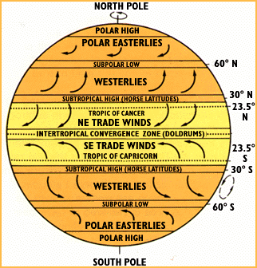
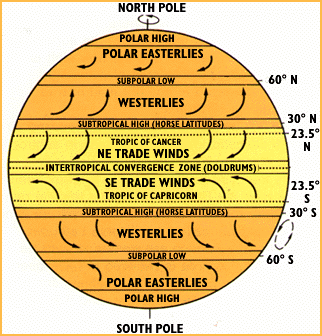
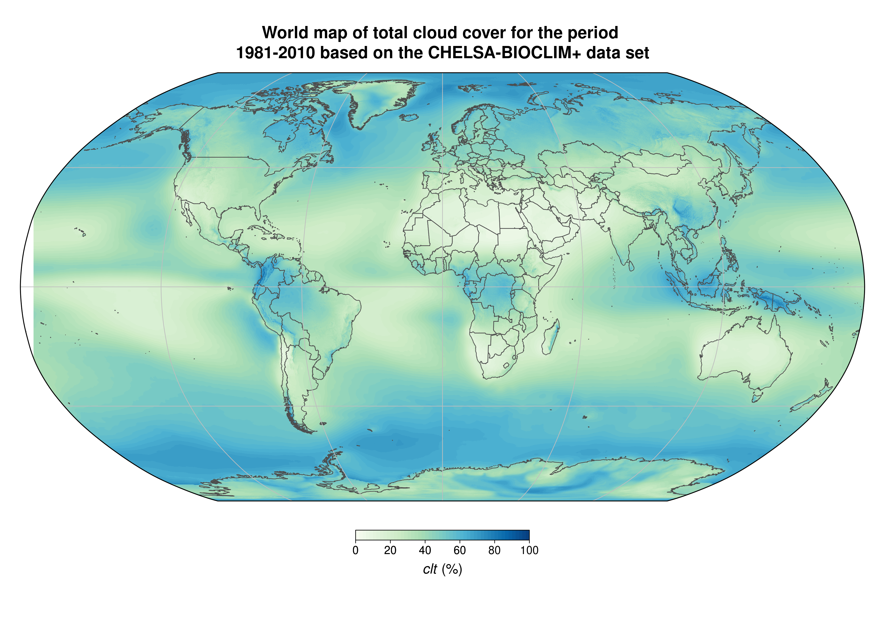
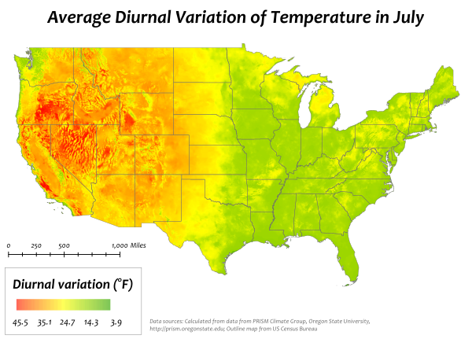
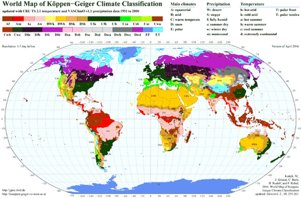

Introduction
I feel okay in 10-30 ºC, optimum 22ºC, 12-36ºC with fast wind. However let a bit colder to account for winter nights.
Use some "equivalent temp", taking humidity, wind, and sunlight into account. (Humidity exaggerates the temperature, a little wind goes a long way, sunlight can fry you)
Country list
- Switzerland
- Texas
- Andorra
- Holand
- Lisbon, Porto
- Georgia (no US)
- Florida
- Australia
- Puerto Rico - USA without USA taxes
- Estonia
- Nevada
- Panama
- Ireland
- Isla Margarita
- Tennessee
- New Hampshir
- Singapore (Cool but $), Malaysia?
Requirements - Filters
This section outlines the key criteria used to filter potential locations, categorized by climate, geographical, and political/economic factors.
Climate Filters
These filters focus on environmental conditions to ensure a comfortable and sustainable living environment.
-
Temperature
t_max =average of all max temps for each day within the warmest month. Must be < 30 celsiust_min =average of all min temps for each day within the coldest month. Must be > 3 celsius. Definitely above 0.- ```python def points_for_temp(temp: float, t_min: float = 3, t_max: float = 30) -> float: # The further you get from the extremes, the more points you'll lose. The optimum temp is the average of t_max and t_min return - (t_min-temp)2 - (t_max-temp)2
place.points += points_for_temp(place.t_max) place.points += points_for_temp(place.t_min)
`` - Rainfall -rain_speed_max =90th percentileq(0.9)of max rain_speed (This filters crazy not normal storms, but cares about the maximum) between 6:00 and 21:00 - Filter out the places with top half rain_speed_max - (Plot this in map and histogram may be interesting) - Humidity -humidity_max =average humidity of the most humid month. - Filter out the top half - Cloud cover - Health and psychology reasons - Average .68, Madrid has 0.4, Los Angeles 0.32, Lisbon 0.48) -cloud_cover_max =maximum value of 60-day moving average of cloud cover, over a year -cloud_cover_max < 0.6- Check what kind of clouds are being checked etc. How do translucid high ones affect the value. - Filter entire climates according to [Köppen–Geiger climate classification system](https://en.wikipedia.org/wiki/K%C3%B6ppen_climate_classification) - Only take these ones:Cfswbc: Cfb Csb Csc Cwb Cwc` - C: Warm temperate - fsw: Fully humid, summer dry, winter dry. - abc: a: hot, b: warm, c:cold summer. - Cfa: Warm Oceanic (Humid Subtropical) - Cwb: Tropical Highland, Csb: Warm Mediterranean Climate - Csa: Hot Mediterranean Climate.
Geographical Filters
These filters consider the physical characteristics of the land and its surroundings.
- Visibility, many hours with sunset/sunrise light
python def horizon_angles(coordinates: tuple[float, float]) -> List[float]: ''' Takes a position and returns an array with the angles of the horizon at your location, for every orientation ''' def horizon_angle_sun_average(coordinates: tuple[float, float]) -> float: ''' Return the average horizon angle between the sunrise and sunset sun orientation at winter, which are the angles we care about. '''- Highest elevation in the SouthEast-SouthWest directions (from winter sunrise sun orientation to sunset)
- You can have obstacles like a mountain at east, but leave it free at south-east to have sunlight at winter
horizon_angle_sun_average(...) < 10 deg?or just filter out top 25%
- Filter places that are southwards of the top of the hill for colder climates, or northwards for warmer climates. The slope break (change of slope) is a good place.
Political & Economic Filters
These filters address the governmental and financial aspects of a location.
- Filter government permit to build an independent home with land around it.
- Politics and Economics
- Free country with powerful economy.
Expected Results
- best temp: latitudes within the Ferrel Mid-latitude cell, 30 to 60 deg.
- Close to 30 very dry, close to 60 very humid.
- Wind generally from west to east
- Big mass of water at the west to stabilize air temperature, and lower the horizon
Visualizations
Global air circulation - Ferrel Mid-latitude cell
 

Max temperature of warmest month

Average temperature

Cloud Cover

Diurnal air temperature variation

Köppen–Geiger climate classification system

Nomad index - Best cities for digital nomads

References
- 5 Best (and Worst) Places to Build a Home or Village
- To open Jupyter in another drive: execute in anaconda prompt:
jupyter notebook --notebook-dir=E:/
- https://www.usnews.com/news/best-countries/rankings
- https://www.usnews.com/news/best-countries/portugal
- What is global circulation? - Met Office
- Which city has the best climate in the world?
- Building a recommender software
- https://nomadlist.com/
Datasets
- https://www.numbeo.com/cost-of-living/
- https://docs.kinetica.com/7.1/guides/quickstart-guide/
- https://datasetsearch.research.google.com/
- https://ourworldindata.org/
- https://data.world/datasets/geography
- https://freegisdata.rtwilson.com/
- https://power.larc.nasa.gov/
- https://power.larc.nasa.gov/api/pages/?urls.primaryName=Hourly
- https://archive.ics.uci.edu/ml/index.php
- https://data.worldbank.org4
- https://www.kaggle.com/datasets
the CHELSA climate dataset (Karger et al., 2018; Data from: Climatologies at high resolution for the earth’s land surface areas, Dryad, Dataset.) which is part of the PaleoClim (1979–2013) database (Brown et al. 2018; SDMtoolbox: a python-based GIS toolkit for landscape genetic, biogeographic, and species distribution model analyses. Meth. Ecol. Evol. 5:694–700.). Additionally, we used data from land cover from the European Space Agency GlobCover Project, which is a helpful addition for landscape ecology studies in particular.